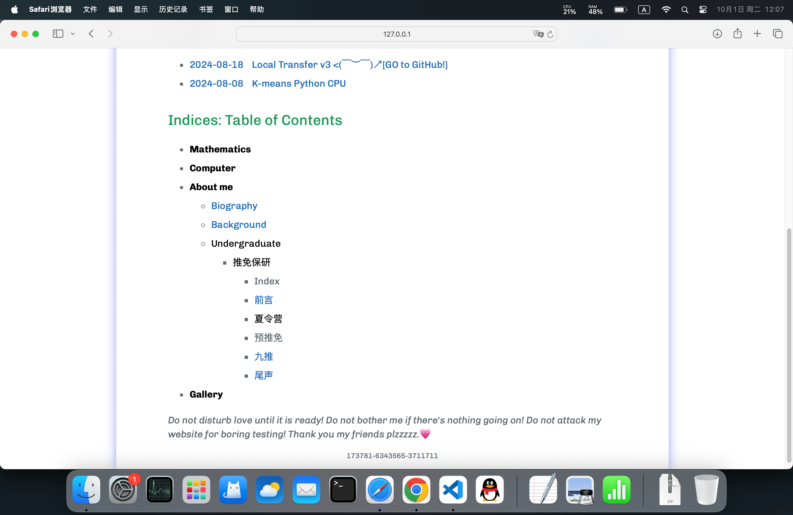
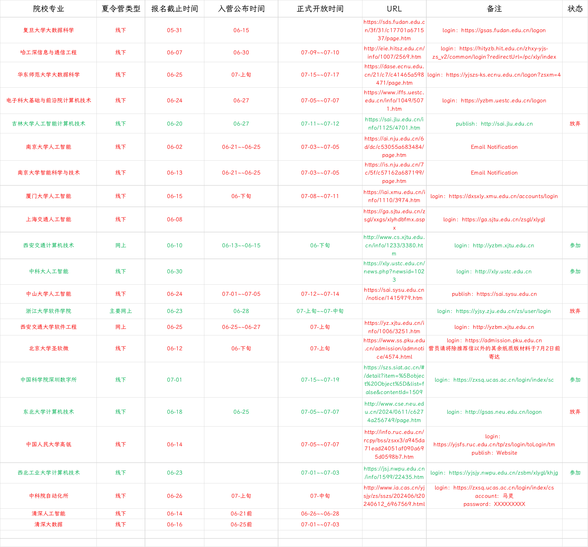
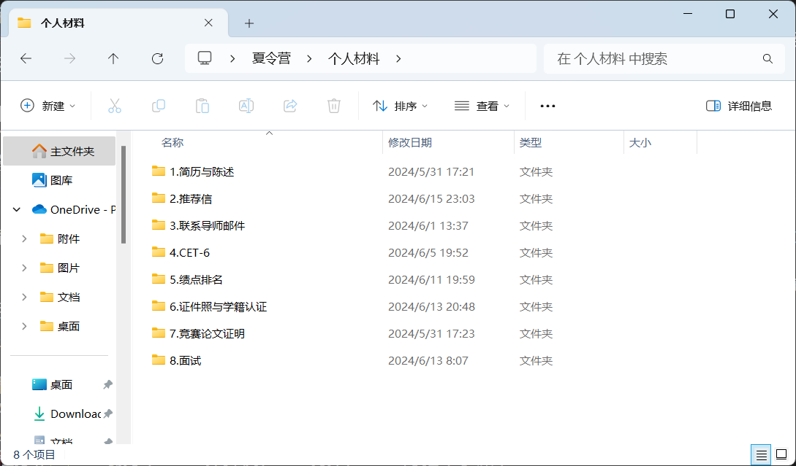

如果你已经考虑清楚推免保研，并为此做好准备，我希望这个栏目对你有所帮助，祝你好运！你可以通过我的邮箱撰写你想说的话。
尊敬的西安交通大学计算机学院的安教授，您好，您是位好老师，如果您看到这篇文章，我再次表达歉意，因为我的行为给您带来失望与痛苦，这件事是我的问题，我的责任，我希望能够弥补，得到安教授您的原谅。如果读者您认识安教授，非常感激帮我转达。
萍水相逢，尽是他乡之客。
中国科学院深圳先进技术研究院，数字所，计算机科学与技术 081200 学硕，课题组 MMLab 实验室。
MBIT 人格：INFJ（测量于 2024 年初）
心理状态：健康
本科学校：末九分校 o(╥﹏╥)o
专业：数学系 — 信息与计算科学
GPA：4.173 / 5.0
综合推免排名：1 / 28
学业排名：大一 2 / 157、大二 1 / 31、大三 2 / 28
课程分布：28% 数学、17% 计算机、5% 统计、50% 博雅（水课）
英语：513（大一上 CET-4）、452（大二上 CET-6）
竞赛：美国大学生数学建模竞赛 M 奖（队长）、市场调研与分析大赛国三（编程）、全国大学生数学建模省一（队长）、数学竞赛 A 类省二（个人）、中国大学生计算机设计大赛省二（队长）、分子动力学 Bohrium 计算材料比赛（微调）
文章：SSCI 金融经济 JCR Q1 (IF=10.4) 二作、SCI 机器学习 JCR Q2 (IF=2.7) 五作
编程项目：C 语言刷了 LeetCode 热题一百的近一半、代码仓库
我是在大二下学期，才开始争取保研，前三个学期对保研一直不感冒，就上课学学，下课玩玩，做一些自己喜欢的事情，没顾虑很多。这种散漫自由的状态，直到大二下学期末才被点醒，因为身边人都开始为前途担忧而顾虑起来。
很大程度上，我感谢舍友王神，他是我保研的引路人，他更渴望保研。我是一个独来独往的人，没有学长学姐给我传授经验，也很少找老师去聊保研。所以很多保研上的事，是王神给我指导。
我一直很喜欢数学，但我发现数学真是太难了。我记得有一次讲“Klein 四元群和阿贝尔群”，老师很自信，语速好快，我一堂课听得懵懵逼逼。还有一次讲“Möbius 上的曲面积分”，我硬是算不明白。我的朋友林，跟我解释“Liouville 定理”，复变空间中的模有界定理，我理解得极其吃力。
数学是研究数的性质的一门学科，讲究计算、推理、证明，但我觉得现在的环境，以一数学本科生毕业我直接失业。所以开个玩笑，我得学 Java（期末考试还拿了 100 满分），月薪过万。我的本科课程选了不少跟计算机相关的，也促使我慢慢向计算机领域转型，计算数学是做不下去一点。
我发现计算机比数学简单，但我不是他们科班出身，有些朋友甚至高中就打 ACM 比赛，所以我代码（尤指数据结构方向）能力根本比不过他们。我选了 408 的一些课，但我们的学习方式更多是把伪代码背下来。
我更多是自学项目，喜欢看不同编程语言的优缺点，在 GitHub 上下载奇奇怪怪的代码，在 Stack Overflow 上看怎么配置各种错误项目的环境依赖，偶尔 debug 调试会彻夜通宵（现在不能做了，太伤身体）。
说了这么多，最后想强调，我是一个废物，数学数学学不好，计算机计算机没学明白，总之不要有滤镜。
推免前期，我想着申请计算机方向，但我怕比不过科班同学，所以为了求稳，夏令营选了不少像人工智能、大数据方向的专业，我认为或许本科的数学知识能在此发挥作用。但到了推免后期，我直接摊牌，真大不了会本校读计算机算了，本校计算机好歹还是 A 的学科评估，所以预推免申请的几乎全是计算机专业。
以上，就是我为什么选择保研，为什么选择计算机方向，以及推免期间方向的转变。我会遗憾吗？或多或少。我会悔恨吗？有那么点。生命的长河里，有太多比保研更重要的事情，缘分大于选择，选择大于努力。人外有人，天外有天，深思熟虑，谋定后动，愿我们行走在大道之上，一马平川。祝你好运！
目前来看，我是想往就业方向发展，所以：好导师 > 学校 Title，放实习 > 学校 Title，硕士 >> 博士，由于我爸爸一直希望我走公务员赛道，或者（中央）选调，为了哄他开心，学硕 > 专硕。
我不接受工程硕博，尤其是工程博士，我认为这个太新兴了，它是为国家培养高端人才的蓄水池。此外，还有一种是军事化学校，如果我能拿到军籍身份，我些许会考虑，但要是非军籍身份，只有国家需要我，我才会弃笔从戎。下面两张图是我夏令营和预推免的申请情况，你可以在主页对应的索引找到每篇文章。

请注意，表格中的只是我列举到的，还有不少遗漏的申请，像 USTC 的 MIRA Lab、清华深圳的杨余久老师、中科院计算所的 VIPL、中科院软件所的 ICIP、SJTU 的 AI Lab 等，因为推免期间来不及同步，所以你可能会在游记里面发现。

【Tips】网站服务器节点挂在加利福利亚，开梯子下载资源速度更快，但请不要流量劫持，恶意攻击我的服务器！

全国计算机保研交流群：绿群，伟大，无须多言
国家推免系统申报流程：来源于中科院数字所行政文件 397 KB
算法基础模版小全：来源绿群群友推荐 817 KB
简历：夏令营我用的是 HTML 导出 PDF 简历，预推免用的是 LaTeX 导出 PDF 简历，整理成 .zip 压缩包 942 KB
面试幻灯片：XeLaTeX 导出 PDF，推免面试期间一直用的幻灯片 16.1 MB
推荐信：有些申请院校需要推荐信，一般学生写好让老师过目并签字盖章 83 KB
个人自述：个别高校要求 500/1000/2000/3000 不等字数来介绍自己，我的是 LaTeX 导出 PDF，胡乱写的，450 KB
批量化联系导师邮件代码：由于一个一个问导师是否有招生名额太麻烦了，写了一个 SMTP 的 Python 脚本，批量群发 99 KB
(1.) 如果再来一次，我会选择本科就业，保研并不值得，尤其现在就业环境这么糟糕。
(2.) 跨专业的难度比我想象的要大得多，而且跨 CS，据说除了金融、计算机、电子外，其他专业好像并不是很卷，身边朋友材料保送清华，外国语保送北大，计算机营都进不去。夏令营和预推免，我觉得最重要的是会讲故事，东西是不是你做的，算法你会不会写，其实没那么重要，能讲好故事，让老师喜欢很重要。
(3.) 运气 > 选择 > 努力，人外有人，天外有天，天意胜过人为。夏令营见过太多大佬，预推免经历太多变数，发现努力是最不值得一提的，但前提是我们必须奋斗过。
(4.) 推免制度并不完善，2024 年计算机保研，让我越发觉得需要国家监管，我在九推感悟很深。
(5.) 今年的保研形势是过去五年最难的一年，同样也是未来五年最简单的一年，形势会越来越恶劣，根据保研交流群往届学长学姐反映，今年确实形势差得离谱，头部高校压缩保研名额，底下学校扩招保研名额，全国整体推免名额增加。
(6.) 不管是做一个诚实守信的人，还是做一个尔虞我诈的人，请你做自己，但我们都希望向着美好的一面发展。
(7.) 凡事要趁早，越临近国家推免开放日，形势越混乱。能夏令营拿到 offer，就不要想着预推免拿，虽然“保研圣经（绿群旧约版）”捡漏机会很大，但赌输了就没学上了。
(8.) 选择最合适自己的，而非选择满足一时快乐的，这是个理智的建议。学校的 title、研究生的导师、课题组的力量、实验室的氛围、地域的优势，等等的这一切需要理性抉择。
(9.) 风险与机遇并存，但最好要有撤路可言，警惕幸存者偏差。乐观的保研经验帖子看多了，需要有意识找悲观的经验帖。和往届优秀的学长学姐交流多了，也要联系联系保研失败的案例。
(X.) 心态一定要放平，心若止水，焦虑但要从容。跨保见过好多大佬，一年产出 4 篇 SCI 一区一作，还有 CCF-A、ACM 金牌，说实话，我刚开始也被焦虑到了，自己这么菜，别人那么厉害，一度自闭。后来慢慢适应了，心态就好很多了。做好自己，持之以恒，不管去了好地方，还是不想去的地方，心态不能乱。
发送邮件 575 份
收到邮件 123 份
电话记录 81 条
金钱花费 9731.28 元
里程数，呃，车票飞机票我算不明白，拉倒了
| 名称 | 解释 |
|---|---|
| rk、rank | 排名，可以是绩点排名，也可以是综合排名，哪个高用哪个 |
| title | 学校头衔，名气，如四非、双非、211、985、C9、华五、top |
| com | committee 缩写，强 com 指招生组委会权力大，必须通过学院考核，录取效力比较铁；弱 com 指意向导师权利大，必须联系导师考核，录取效力看导师人品 |
| oq | over-qualified 缩写，材料审核的老师认为你过于厉害，最终不会来，故意淘汰你 |
| wl | waiting list 缩写，候补队列，指有更优秀更合适的同学在你前面，你先进入鱼塘 |
| bar | 门槛，入围院校的难度，预推免比夏令营可能还高 |
| AP | assistant professor 缩写，指助理教授，一般是非升即走制度下的职位，具有招收博士的资格，一般为年轻老师 |
| push | 课题组科研压力很大 |
| 夏令营 | 各大高校提前抢优秀生源的活动，竞争激烈 |
| 预推免 | 高校继续招生的活动，感觉今年比夏令营还激烈 |
| 928 | 指 9 月 28 号，这天上午 9 点国家推免系统开放，也标志着九推开始，一般而言，所有高校在 9 月 29 号一天完成全部录取工作 |
| 十推 | 指十月中上旬某些高校紧急招收推免生，国家推免系统 10 月 20 号关闭 |
| 鸽 | 学校、导师、学生，任意两方或三方不守信用，放鸽子 |
| 鸽穿 | 院校的候补名单中所有学生都能被录取，可能有些院校被全部学生放鸽子 |
| 套辞、陶瓷、套瓷 | touch 直译，指学生联系导师，一般用于获得青睐、推荐、offer |
| 反向套瓷 | 导师倒追学生，一般可能是坑导，或者导师被学生鸽了而急缺人 |
| 官回 | 导师或院校官方回复，指敷衍学生 |
| 反向官回 | 学生足够牛，吊着导师 |
| 羊导、养导 | 导师散养，一般不管学生干啥，允许实习 |
| 海王 | 对学生而言，指手握大量 offer，对导师而言，鱼塘有大量学生 |
| 陈汉华、chh | 黑红也是红，华中科技大学计算机科学与技术学院的一位教授 |
| 钱塘潮、qtc | 一位给绿群群友带来欢乐的西安交通大学软件学院老师，方改名“求是鹰”，今改名“水木” |